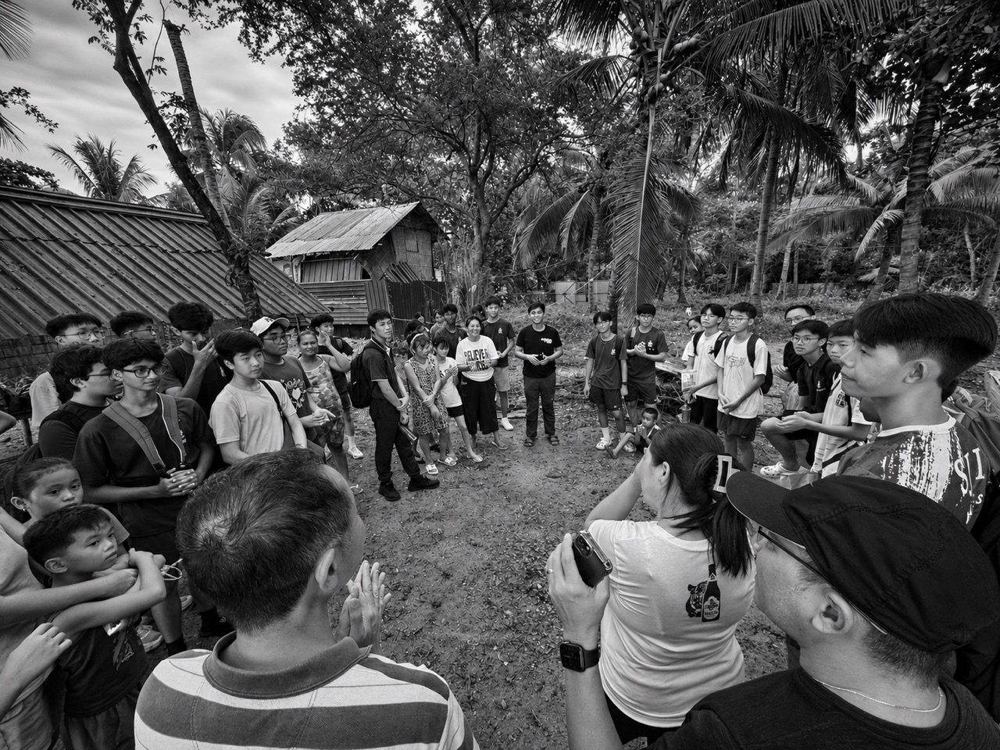
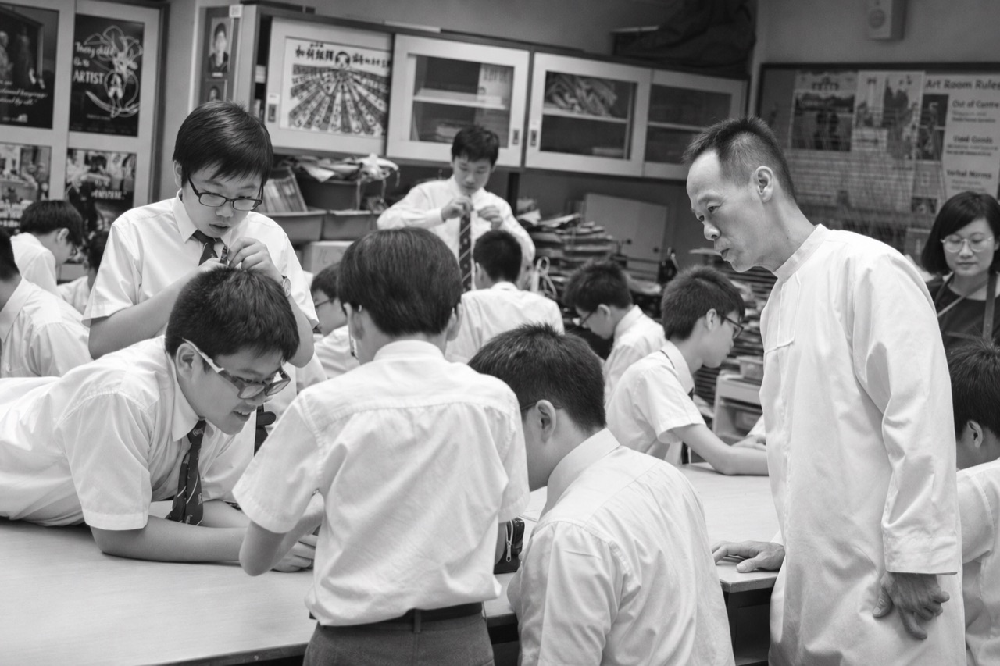
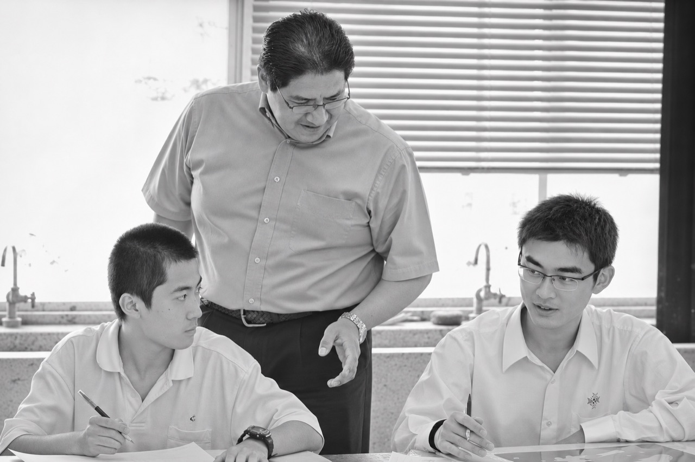
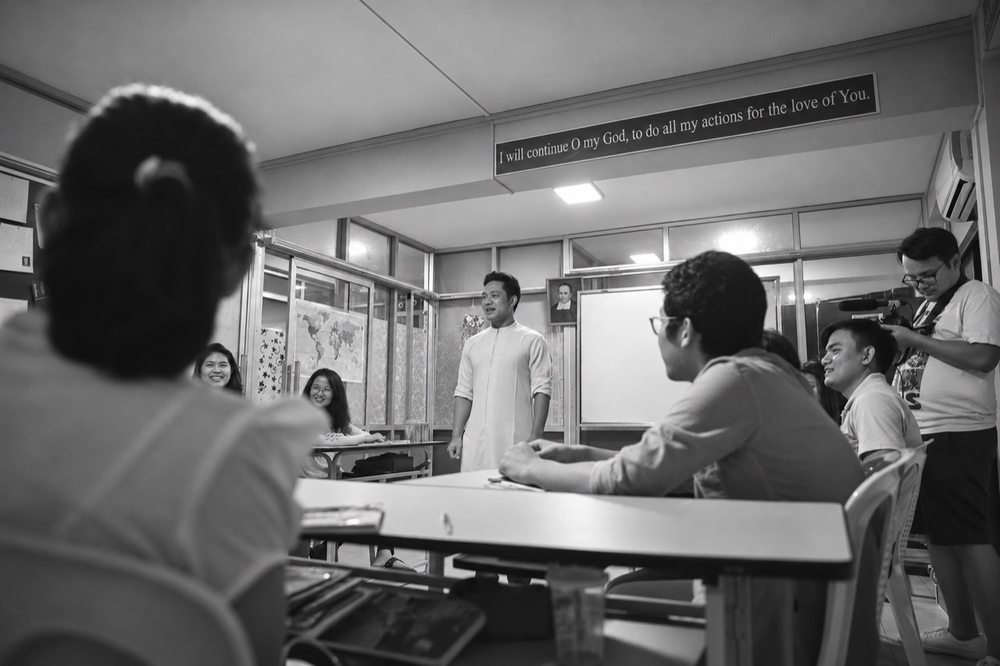
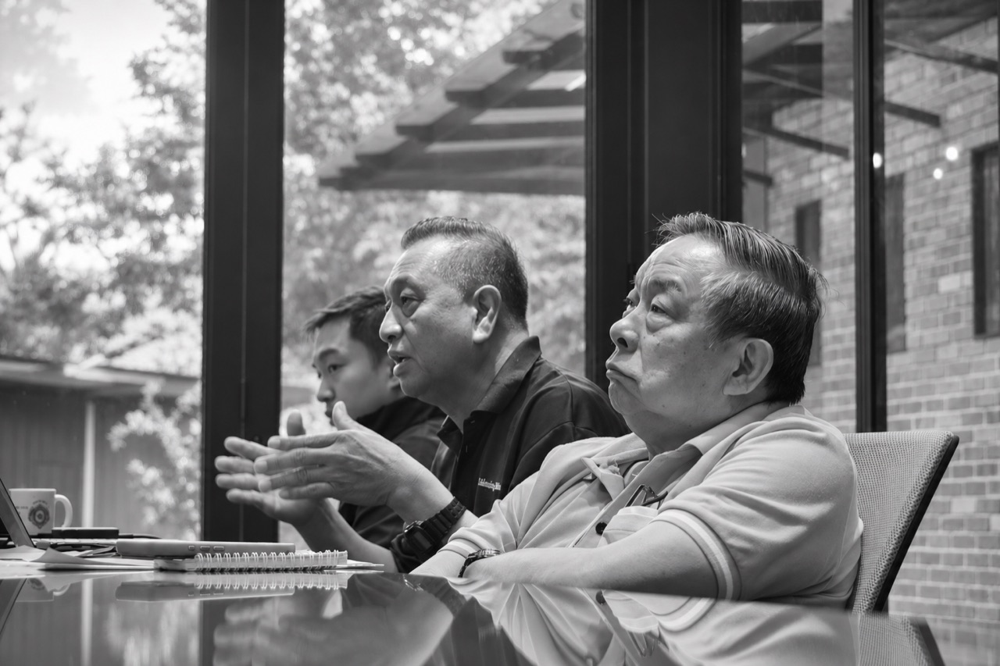
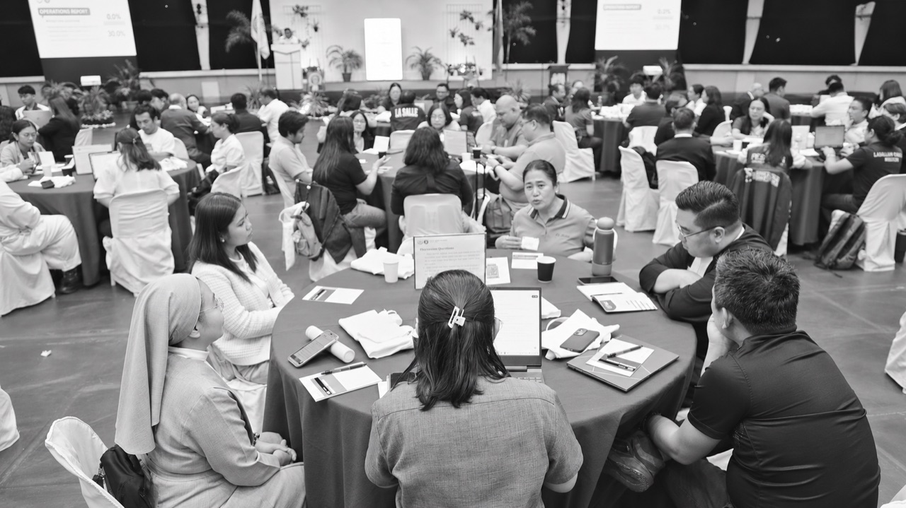
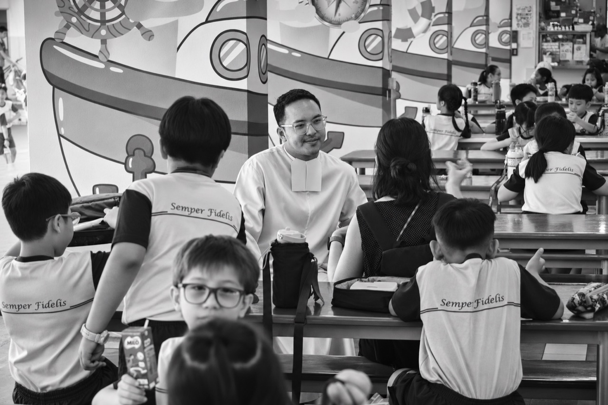

Voices of the
Sector Assemblies
Becoming Leaven for the Peripheries
Listen to the voices ↓


Executive Summary
From March to June 2026, every sector of the Lasallian East Asia District (LEAD) held a Mission Assembly and a Brothers' Assembly to discern how the Lasallian Mission can become "leaven for the peripheries." Students, Brothers, lay partners, parents, alumni and other partners took part in small-group spiritual conversations marked by attentive listening, silence and prayer. Each sector summarized what it heard in a sector report.
The District's Listening and Writing Sub-Team analyzed these reports through thematic analysis. Codex, a generative AI tool, assisted in coding the responses, and team members checked every code against the original sector reports. Related codes were then clustered into themes through an iterative process of reflection, discussion and consensus. Concerns raised in four or more sectors point to experiences shared across the District.
Nine themes emerged. Six describe the central commitments of the Mission:
- Lay empowerment, formation and Mission continuity: preparing, trusting and supporting lay partners to share responsibility for the Mission, so that it remains strong through changes in leadership.
- Social engagement, environmental stewardship and the peripheries: reaching people who are overlooked, whether beyond the school gates or within a classroom, family or community, and caring for the environment young people will inherit.
- Lasallian and Catholic identity: expressing the Mission's roots in ways that are faithful, understandable and welcoming to people of every faith.
- Life of the Brothers: deepening prayer, fraternity and personal presence, and drawing on cooperation across generations.
- Leadership of the Brothers: leaders who listen, consult, remain available and take responsibility for their decisions.
- Vocation Animation: making the Brothers' calling visible through authentic witness and relationships sustained over time.
Three further themes describe the support these commitments need:
- Sustainability of the Mission: the people, resources and structures that keep worthwhile commitments dependable, especially for communities in greatest need.
- Communication and engagement: closing the gap between District resolutions and awareness in schools, and creating space for genuine listening.
- Engaging other stakeholders: inviting students, parents, alumni, volunteers and partners to contribute their time, skills and leadership.
The sectors' voices converge on one message: the Mission endures when people understand its purpose, have a real voice in shaping it and receive the support they need to live it well. The themes are offered as starting points for District-level reflection and decision. They carry shared hopes as well as differences that still call for conversation.
Seven sectors.
A shared mission.
Two assemblies in each sector brought the Lasallian family into conversation: a Mission Assembly and a Brothers’ Assembly.

Myanmar ↗
Malaysia ↗
Philippines ↗Thailand ↗
Singapore ↗Explore each sector’s coverage in the code appendix.
The Sector-Level Discernment Exercises
The Sector Assemblies took place from March to June 2026. Each sector held two assemblies: a Mission Assembly and a Brothers' Assembly. Guided by the theme "Becoming Leaven for the Peripheries," the assemblies followed the method of synodality and spiritual conversation. Each sector chose whether to meet in person, online or in a hybrid format, while ensuring that the different members of the Lasallian family were represented: students, Brothers, lay partners, parents, alumni and other partners.
The conversation method
Participants met in small groups of five to seven people, each with a facilitator and a documenter. The Mission Assembly had three conversation blocks; the Brothers' Assembly had four. Each block centered on one reflection prompt and moved through three rounds of sharing and listening, separated by periods of silence and prayer:
- Sharing. Each participant reflected quietly on the prompt, then briefly shared a response while the others listened. The group then paused for prayer.
- Listening for what resonated. Participants took turns speaking for two to three minutes about what struck them: what they heard, what they felt and what they sensed the Spirit was saying. The group paused again for prayer.
- Open conversation. Participants asked questions, clarified what they had heard and explored the discussion freely.
Each block closed with the group naming its points of agreement and disagreement, together with any resolutions or ways forward.
The reflection prompts
Both assemblies used the following three prompts:
- How has your sector embraced and implemented the resolutions of the District's previous Discernment Exercises?
- What realities or challenges have you encountered in your school, community, ministry or sector in the work of becoming leaven for the peripheries?
- In what ways can we collaborate as a District so that the Lasallian Mission becomes leaven for new peripheries?
The Brothers' Assembly added a fourth prompt:
What competencies should our District leaders have to inspire active participation in the Mission and promote our vocation as De La Salle Brothers?
The documenter of each small group summarized the responses on a common template. Each sector then compiled these summaries into a sector-level report and submitted it to the District's Listening and Writing Sub-Team.
How the Themes Took Shape
The Listening and Writing Sub-Team used thematic analysis to identify the themes in this report. The work moved through four steps:
- Generating codes from the sector reports
- Validating the codes against the original responses
- Clustering related codes
- Labeling and defining the resulting themes
Generating and validating codes
Each member of the Listening and Writing Sub-Team was assigned specific sector reports to read closely, so that every report was known in depth by at least one person. The team agreed to use Codex, a generative AI tool, to assist in identifying codes across the Mission and Brothers' Assembly reports.
A code is a short label that names a significant idea in a response. For example, the response "Continued leadership formation for Lasallian partners and students is essential for sustainability" was coded as Systematic formation for staff and leadership. Responses expressing a similar idea, such as "Strengthen the quality of teacher formation, since teachers are key companions and facilitators in implementing the Lasallian mission," were given the same code. Codes that recur across responses point to experiences and concerns that participants share.
Every code generated with Codex was reviewed by the team. Members checked two things: that each code faithfully captured the meaning of the response it was attached to, and that each quoted response actually appeared in the sector reports.
From codes to themes
The team then grouped codes that expressed similar ideas, feelings or experiences. This was a process of sense-making aimed at identifying broader, recurring patterns. Some codes appeared in only one or two sectors; others appeared in four or more, suggesting experiences common across LEAD. The team also considered whether each concern was best addressed at the District level or more appropriately at the sector, institution or ministry level. The resulting clusters were organized into themes, whose labels and definitions were drawn from the codes themselves.
For example, comments about continuing education for teachers, support for lay leaders and opportunities to take responsibility each named a particular need. Considered together, they revealed a larger concern: preparing people to carry the Mission forward. In the same way, accounts of loneliness, financial hardship, special educational needs and overlooked members of a community deepened the understanding of whom the Mission is called to serve. Reflections on listening, consultation, accountability and the availability of leaders converged on the kind of leadership people need.
Remaining faithful to the sectors' voices
To preserve the integrity of the data, the team moved repeatedly between the original sector reports and the emerging codes and themes. The process was therefore iterative rather than linear. It involved careful reflection, honest conversation, disagreement and negotiation before the team reached consensus. The themes are the product of this deliberate effort to do justice to the voices of the Sector Assemblies. Appendix A lists the themes and codes with short definitions, sector coverage and assembly groups. The shared coding workbook retains the links to the original excerpts.
Commitments that carry
the mission forward.
Six themes describe the central commitments that emerged: lay empowerment and formation, response to people at the peripheries, Lasallian and Catholic identity, the life of the Brothers, leadership of the Brothers and Vocation Animation. Three further themes, sustainability, communication and the engagement of other stakeholders, describe the support these commitments need to thrive. Each theme is offered as a starting point for further reflection and decision. Together they hold both shared aspirations and differences that still call for conversation.
Lay Empowerment, Formation and Mission Continuity
This theme brings together the formation of lay partners, their meaningful participation in leadership and their shared responsibility for sustaining the Lasallian Mission. It calls for lifelong formation woven into everyday school and community life, formation that deepens partners' understanding of Lasallian values and spirituality and builds the confidence and skills to live them out. Empowerment grows through trust, clearly defined responsibilities, a genuine voice in decisions and accountability for the Mission entrusted to them.
Mission continuity depends on making shared responsibility a lasting part of institutional life. Sustained investment in formation, support for emerging leaders, manageable workloads and collaboration between Brothers and lay partners help the Mission remain strong through changes in personnel and leadership. Together, these commitments build a community in which people are prepared, trusted and supported to carry the Mission forward.
“We must move beyond ad-hoc sessions to life-long formation for staff, parents, and students, bridging the values gap between home and school.”
Singapore
“Lay empowerment is affirmed as a successful strategic shift, where Lasallian Partners work “with” rather than just “for” the Brothers as “shared guarantors” of the mission.”
Philippines
Pause for reflection +
How can we deepen the formation of lay partners and strengthen their participation in leadership and shared responsibility for the mission?
What support and institutional capacity will sustain this responsibility as people and leaders change?
Social Engagement, Environmental Stewardship and the Peripheries
This theme joins service to people with care for the environment. Peripheries refers to the places and circumstances in which people are pushed aside, overlooked or unable to participate fully. These may lie beyond the school gates, or within a classroom, a family or a Brothers' community. Responding to them means listening, protecting people from harm, widening access to education and helping individuals and families build more secure futures.
Singapore's reflections drew attention to loneliness, emotional distress and gaps in support for young people with special educational needs. Philippine participants identified financial hardship and isolation, and Brothers also spoke of members whose wounds or needs can go unnoticed. In Malaysia, environmental care took practical form through reducing waste, conserving resources and enabling students to lead ecological initiatives. Service-learning, which combines service with structured reflection, connects these concerns to the everyday education of young people.
“Service should not be limited to international travel; local realities in Kagoshima, Hakodate, and nearby communities also call for Lasallian response.”
Japan
“Participants agreed that the meaning of 'peripheries' must be examined carefully so service does not only go to visible, familiar, or easy-to-approach groups, but also reaches people who are isolated, hidden, or truly in need.”
Hong Kong
“There is a possible chance to find career opportunities for the young generation, not only education.”
Myanmar
“Environmental responsibility is not a side project it is integral to the Lasallian mission's vision of educating the whole person and caring for the common home.”
Malaysia
Pause for reflection +
How do we redefine the visible, hidden, internal and external peripheries of our Mission? How can service, education and care for the environment become lasting expressions of our mission?
Lasallian and Catholic Identity
This theme concerns knowing the Mission's roots and expressing them clearly in communities of different faiths and cultures. It brings together Lasallian educational values and Catholic spiritual life as they are lived through teaching, relationships, prayer, service and the example of those who lead. A strong sense of identity also makes room for others to understand and take part in the Mission with dignity.
Hong Kong's reflections stressed that religious education must balance knowledge with spiritual formation. Participants called for a clearer, age-appropriate articulation of Lasallian values for students from diverse cultural and religious backgrounds. In Japan, participants described the country itself as a Lasallian periphery because it is not predominantly Catholic or Christian. They asked for teacher formation that makes terms such as "peripheries," "option for the poor" and "mission" concrete and meaningful. Brothers from both sectors named the challenge of translating Lasallian vocabulary and spirituality into non-Christian settings. They proposed contextualizing that spirituality, including by bringing Eastern and Chinese thought into conversation with Christian teaching. The shared invitation is to communicate the Mission's purpose in ways that are faithful, understandable and hospitable.
“The Lasallian mission is fundamentally inclusive and must transcend religious boundaries to be effective in Singapore.”
Singapore
Pause for reflection +
How do we embrace our Lasallian and Catholic identities while remaining respectful of other faith and cultural traditions?
Life of the Brothers
This theme asks how the Brothers can deepen their prayer, relationships and shared life while responding to changing needs. It includes their interior life, the personal spiritual life nurtured through prayer and reflection, and accompaniment, the patient work of walking alongside another person. It also concerns the everyday conditions that make fraternity, mutual care and meaningful service possible.
Brothers in the Philippines emphasized stable communities and leaders who are personally and spiritually available. Singapore's reflections highlighted consistent presence and renewed relationships within community. Malaysian Brothers pointed to the contribution of older members, the wisdom that comes with experience and cooperation across generations. These concerns invite new ways of living the vocation while remaining faithful to its founding spirit.
“Stable community membership (minimum of three Brothers) is essential; communities of only two Brothers face disproportionate burdens and lack necessary fraternity.”
Philippines
“Intergenerational collaboration allows senior Brothers to share experience and wisdom while younger Brothers contribute new skills, technology, and innovative approaches.”
Malaysia
Pause for reflection +
How should the life of the Brothers evolve in order to strengthen interiority, community, accompaniment, ministry, and mission, while remaining relevant and responsive to the changing realities of modern society in creative fidelity to the Institute's charism?
Leadership of the Brothers
Leadership of the Brothers means guiding the Mission through attentive relationships and sound decisions, and taking responsibility for their consequences. It calls for leaders who listen, understand local realities, manage conflict, share responsibility and remain available to those they serve. Compassion and accountability belong together: people need both support and clarity about their commitments.
Philippine Brothers emphasized consultation, constructive feedback and a ministry of presence, that is, being accessible and involved in community life. Singapore's reflections linked empathy with decisiveness and pastoral care. Malaysian Brothers stressed the importance of being heard before decisions are settled. Across all seven sectors, participants emphasized the need for leaders who listen with compassion, manage conflict, accept differences and remain spiritually available to those they serve. In the Philippines, Hong Kong, Japan and Malaysia, they also sought leaders who share power and consult genuinely, with regular feedback and evaluation to keep leadership accountable.
This theme also covers the assignment of Brothers across countries. Philippine and Malaysian reflections show why service to the wider District must be balanced against the needs of local communities and schools. Access to information matters as well. The request from senior Philippine Brothers for printed copies of resolutions reminds leaders that everyone needs a practical way to receive, understand and take part in shared decisions.
“Understand differences of culture and context.”
Thailand
“A “Ministry of Presence” is vital; leaders must be personable, visible, and spiritually available to Brothers.”
Philippines
Pause for reflection +
How do we equip current and prepare future leaders to develop competencies towards relational/pastoral leadership? How can their decisions about international assignments and access to information strengthen both local communities and the wider District?
Vocation Animation
Vocation Animation means helping people recognize and respond to a possible call to the Brothers' way of life. It grows through authentic witnessing, personal relationships, spiritual guidance and opportunities to experience community. The Brothers' everyday presence among young people makes that call visible and understandable.
Hong Kong participants described the Brothers' everyday presence, through classroom visits, religious education lessons, Masses and spiritual listening, as a key source of vocation awareness. They noted that fewer and less visible Brothers weaken students' understanding of the vocation, and expressed hope for "Brothers made in Hong Kong." Brothers in Hong Kong and Japan spoke of a crisis in vocation promotion, made harder because the public does not clearly understand a Brother's role. They called for renewed, innovative local approaches and for leaders who inspire hope and encourage new vocations. Myanmar's Brothers saw vocation promotion as every Brother's responsibility, expressed through personal vocation stories, open houses, short live-in exposure programs for youth and social media. Thailand's Brothers sought to foster vocations to the Brothers and Sisters and to strengthen formation for young men in the Juniorate and among Aspirants. Its Mission Assembly also called for fostering Lasallian vocations more broadly. Clearer responsibilities and a healthy balance among administration, community life and pastoral service help create the conditions in which this witness can flourish.
“There is consensus that vocation promotion is a shared responsibility of the entire community rather than just the Vocation Director.”
Philippines
“Strengthen formation programs for young men (Juniorate and Aspirants) also on-going formation for Brothers at all age groups.”
Thailand
Pause for reflection +
How can Brothers’ authentic witness, presence in schools and community life help young people recognize and explore a possible calling to become a Brother?
What support do the brothers need to become authentic witnesses and ministers of presence for young people and lay partners?
Sustainability of the Mission
Sustainability means giving the Mission the people, resources and structures it needs to keep serving well over time. It includes financial stability, support for personnel, practical planning and the capacity to respond to changing student populations and educational pressures. Its purpose is to keep worthwhile commitments dependable, especially for the communities in greatest need.
Concern for the long-term viability of high-needs ministries surfaced in all seven sectors. Participants described funding that is limited, informal or reliant on personal sacrifice, and initiatives that depend on committed individuals and falter when they step away. Mission schools serving poor students, scholarship programs and outreach projects were seen as especially vulnerable. Sectors called for long-term planning rather than one-off projects, supported by shared funding, collective management of resources and documented good practice. Six sectors also named structural and operational barriers that slow this work. These include bureaucracy, permits and rigid procedures; academic schedules and workloads that leave little room for service; language and logistics; and communication gaps between the District, schools and partners.
“Need for long-term planning rather than temporary or project-based interventions.”
Philippines
Pause for reflection +
How can we secure the people, resources and structures needed to sustain our ministries, especially those serving communities with the greatest needs?
Communication and Engagement
This theme concerns helping people understand the Mission, feel included in its direction and contribute to its life. Communication involves explaining decisions, listening to experience and creating space for reflection. Engagement grows when people can see how their voices and daily work connect to the wider community.
Singapore and Malaysia identified gaps between the resolutions adopted at the District level and awareness of them in schools. Hong Kong's Brothers named similar communication and implementation gaps. They proposed translating core discernment documents into local languages and establishing regular, clear channels so local partners can engage with the District's vision. Philippine reflections valued spiritual conversation and meetings that allow genuine listening. Hong Kong participants affirmed that online platforms and shared resources improve coordination, but that online and in-person exchange should complement rather than replace each other. They found on-site visits more transformative than remote meetings, especially where internet access is unreliable. Both forms of connection serve the same purpose: making the Mission something people understand and take part in together.
“Knowledge and implementation of District documents remain uneven across the Sector, with some stakeholders lacking awareness of previous resolutions.”
Singapore
Pause for reflection +
How can we ensure that the mission’s direction and decisions are understood, discussed and translated into shared action across schools and communities?
Engaging Other Stakeholders
Stakeholders are the people and groups whose lives, interests and contributions are connected to the Mission. This theme invites students, parents, alumni, volunteers and other partners to take an active and lasting part in it. They can contribute through mentoring, professional skills, leadership, service and resources.
Malaysian participants highlighted the potential of alumni to offer career guidance, coaching and ongoing companionship. Singapore's reflections called for students to initiate projects and to develop a commitment to service that goes beyond earning points or recognition. Bringing these voices into the Mission helps more people discover that they have something valuable to give, and a share in the responsibility for helping the community grow.
“Alumni contribute not only financially but also through sports coaching, career guidance, mentoring, and other forms of accompaniment.”
Malaysia
Pause for reflection +
How can students, parents, alumni, volunteers and other partners contribute their voices, gifts and leadership to the mission through meaningful and sustained participation?
The code appendix.
The table summarizes the codes, their definitions, the sectors where they appeared and the assembly groups that raised them. See the LEAD Coding Sheet for the full coding trail.
No codes match these filters. Try another search or reset the filters.
Download appendix CSV ↓Listening &
Writing Subteam
- Ms. Christine Ballada, PhDCo-head
- Br. Paolo Mata FSCCo-head
- Ms. Alice Lau
- Mr. Amir Austria
- Br. Carlo Rementilla FSC
- Mr. Kenneth Lee